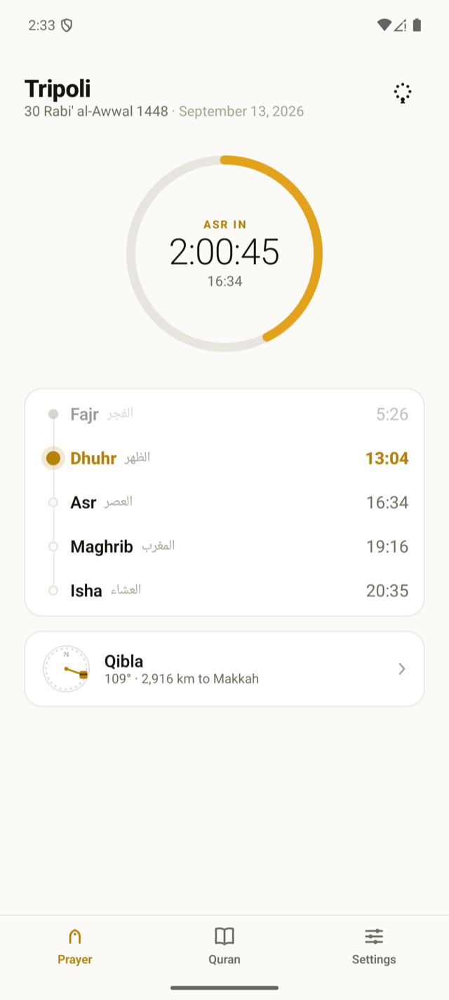
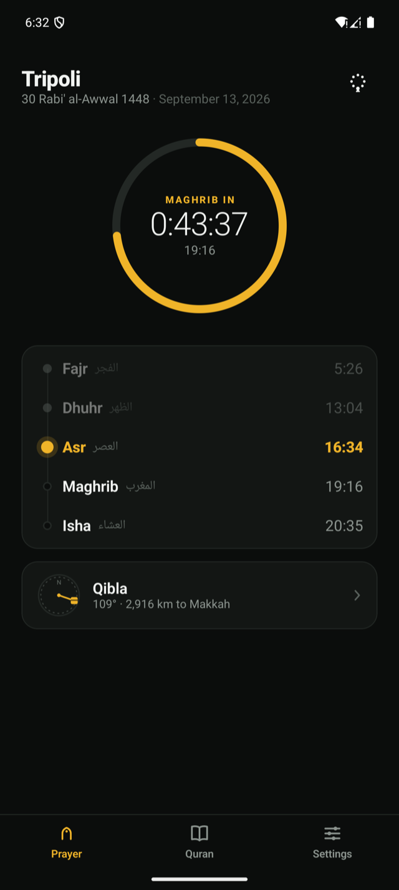
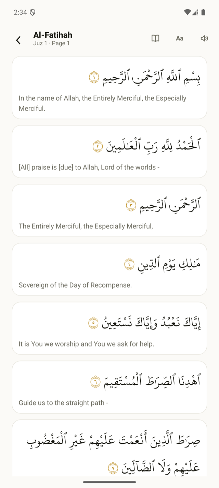
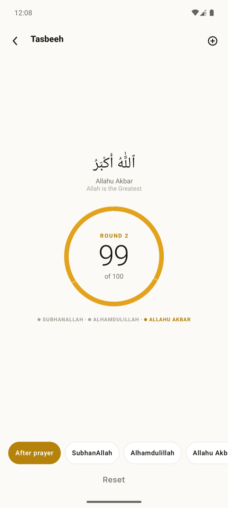
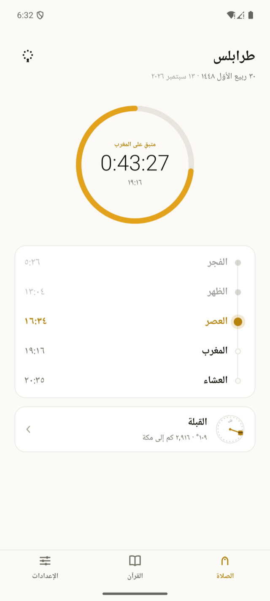

Prayer times
For anywhere on Earth, from your location or a bundled list of cities. The usual calculation methods, Hanafi or Standard Asr, high-latitude rules, and the Hijri date beside the Gregorian.
Free forever. No ads, no account, works offline. For Android and iPhone.

What it does
Taqwa tells you the prayer times where you are, calls you to them, points you to Makkah, and carries the Quran. Then it stays out of your way.
For anywhere on Earth, from your location or a bundled list of cities. The usual calculation methods, Hanafi or Standard Asr, high-latitude rules, and the Hijri date beside the Gregorian.
A notification for each prayer, with a clear tone, a takbir, or the opening of the adhan in a choice of voices. An optional reminder a few minutes before.
A compass corrected to true north, the distance to Makkah, and honest guidance when the phone's compass needs calibrating instead of a needle that pretends.
The Uthmani text in the Madinah Mushaf typeface, seven translations and a transliteration, a page-accurate Mushaf mode, search, bookmarks, and copy or share of any ayah. All of it offline.
Ten reciters. Download a surah, or the whole Quran for a reciter, and listen offline with the ayah lit and the page following the voice, in the background with lock-screen controls.
A dhikr counter: tap anywhere on the screen, the post-prayer set runs to a hundred with the phrase changing at each part and a distinct pulse in the hand. Nothing is ever totted up.
The next prayer and a live countdown on the home screen, the day's times, and an ayah a day, on both platforms.
Arabic is laid out right to left with its own digits, not translated over an English layout. Light and dark, following the phone or fixed, in one amber accent.
On the phone




Privacy
There is no server behind Taqwa and no account to create. The one thing it uses the internet for is downloading recitations, and only when you tap Download.
Free software
Taqwa is released under the GNU GPL v3. The code is public, every text, font, recording and data source is credited in the app, and anything built from it must stay free.